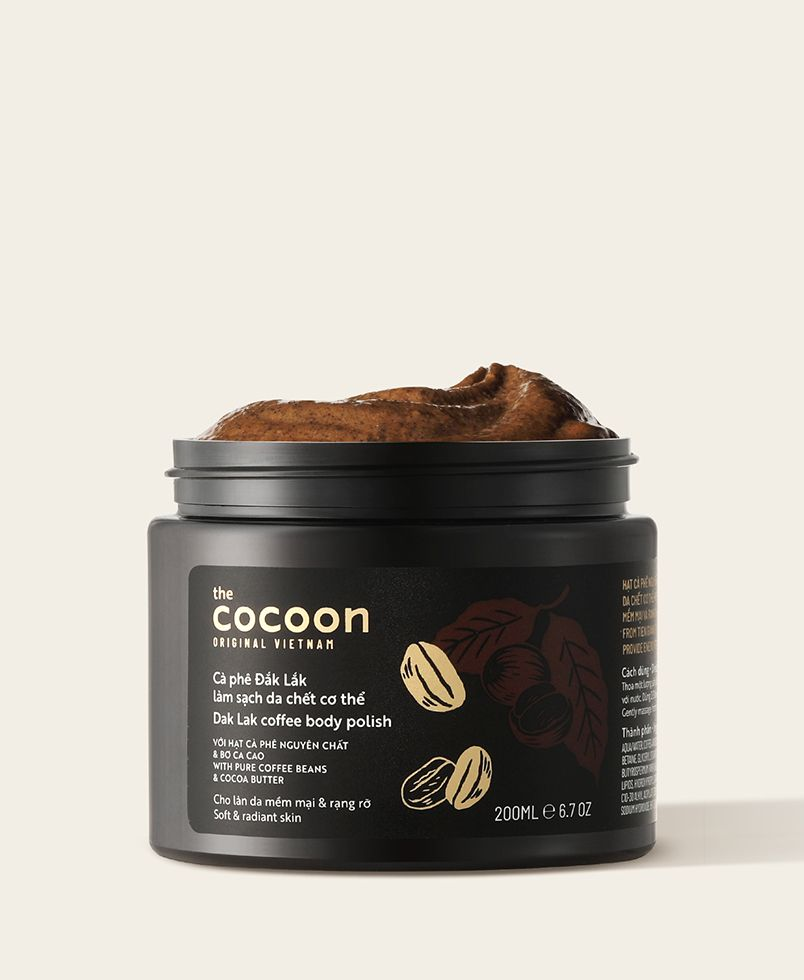
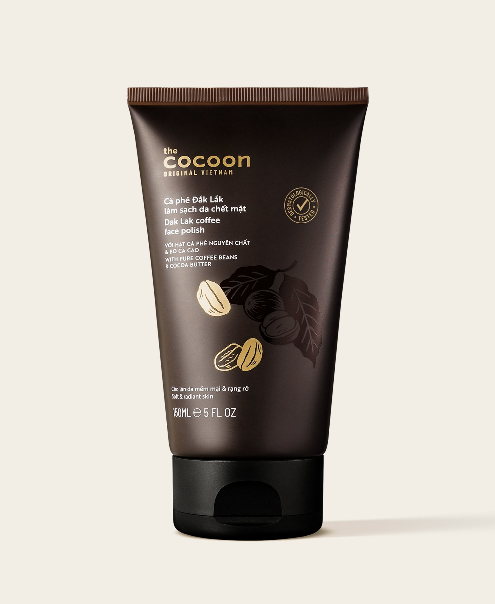
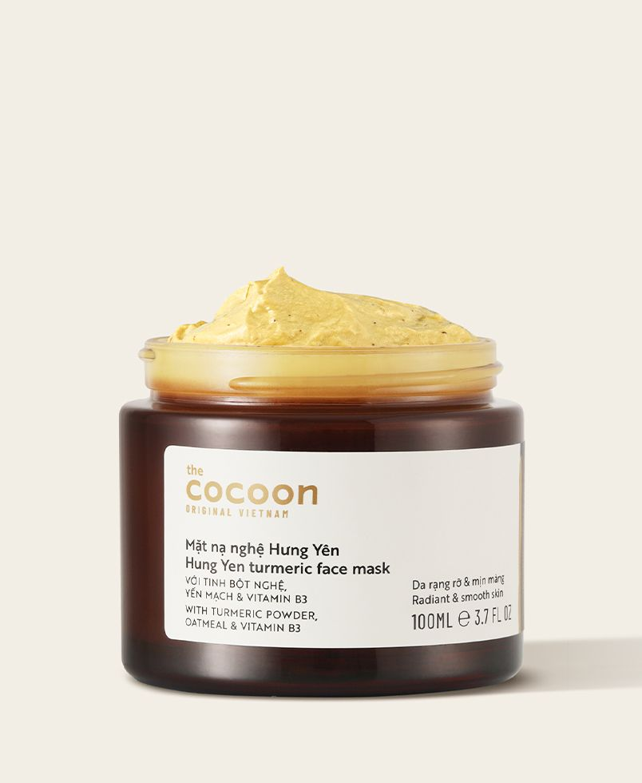
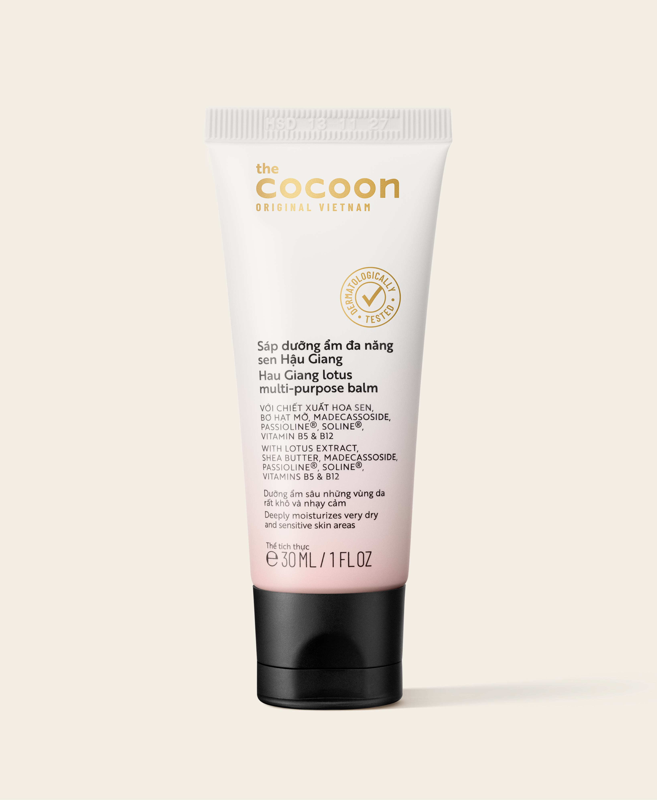

Vài "tip" giúp bạn tận hưởng trọn vẹn từng giây phút làm sạch da chết cùng Cà phê Đắk Lắk
Hãy thử áp dụng một vài tip sau để gia tăng thêm những trải nghiệm thật "chill" với sản phẩm Cà phê Đắk Lắk làm sạch da chết cơ thể.
Đọc thêm →

Cocoon là thương hiệu mỹ phẩm thuần chay tiên phong tại Việt Nam, sử dụng 100% nguyên liệu từ thiên nhiên Việt Nam. Cùng tìm hiểu hành trình và sứ mệnh của Cocoon trong việc mang đến vẻ đẹp thuần Việt.
Đọc bài viết →
Hãy thử áp dụng một vài tip sau để gia tăng thêm những trải nghiệm thật "chill" với sản phẩm Cà phê Đắk Lắk làm sạch da chết cơ thể.
Đọc thêm →
Việc tẩy da chết tuy chỉ mất từ 10 – 15s nhưng nó sẽ giúp bạn loại bỏ các tế bào da chết trên bề mặt da một cách dễ dàng, giảm nguy cơ tắc nghẽn lỗ chân lông.
Đọc thêm →
Giống như các loại da khác, da dầu cũng sẽ đạt được trạng thái khỏe mạnh và mịn màng nếu được làm sạch đúng cách và được bảo vệ với các sản phẩm phù hợp.
Đọc thêm →
Điều này đã mở ra cơ hội cho mỹ phẩm thuần chay từ Việt Nam bước vào một trong những trung tâm làm đẹp hàng đầu thế giới.
Đọc thêm →
Tiếp nối những hành trình bền bỉ vì môi trường, Cocoon tiếp tục phát động chương trình "Thu Hồi Pin Cũ – Bảo Vệ Trái Đất Xanh" lần thứ 5.
Đọc thêm →
Cocoon mong muốn được góp thêm một phần nhỏ bé trong việc cung cấp nguồn lực cho các trạm cứu hộ, giúp duy trì và nâng cao phúc lợi của chó mèo lang thang.
Đọc thêm →